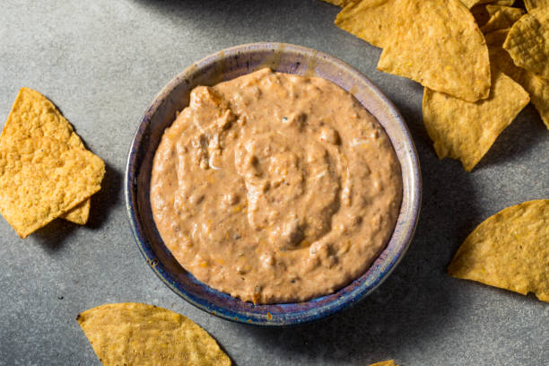

Bean Dip

Bean Dip - A quick and easy recipe for gatherings.
Ingredients
- 1 lb ground turkey or hamburger
- 1 15oz can of refried beans
- 1 packet of taco seasoning
- 1 medium yellow onion
- 1 medium green pepper
- (optional) jalapeno peppers
Instructions
- Dice the onion, green pepper, and jalapeno pepper(if used).
- Brown the ground turket or hamburger.
- Remove any excess grease from the pan.
- Add all veggies and cook over medium heat for two minutes.
- Follow the directions on your taco seasoning packet. This usually involves adding ~2/3 cups water, bringing to boil, then sauteeing on low heat for a few minutes.
- After taco seasoning directions are complete, add the entire can of refried beans.
- Over low heat, stir all ingredients to mix the beans with the meat mixture.
- Use the dip for any kind of mexican food base such as taco, tostadas, burritos, or simply dip chips in it and Enjoy!